B3108
Introduction
The B3108 goes between Bath
Some data goes back to 2010. The road has not changed significantly in that time
Typical speeds
The Google Distance Matrix API enables a query between two points for a future date and using the “best guess” returns the estimated time to travel this distance based on historic data. This has been compared against measured data and found to be a good representation of vehicle speed. Model option “best guess” uses this historic data to estimate how long it might take based on past trips undertaken by people with Android phones.
TAG cost guidance provides costs for
The Google Distance Matrix API enables users to query the estimated time between two points for a specific journey start time. The best_guess traffic model in the Google Distance Matrix API is the default method for estimating travel times when accounting for traffic conditions. It returns the best estimate of travel time based on both historical traffic conditions and live traffic data, with live traffic becoming more important the closer the departure time is to the current moment. Google This parameter can only be used for driving directions and requires specifying a departure time that is either current or in the future. Unlike the alternative traffic models (optimistic and pessimistic), which provide upper and lower bounds on travel time, best_guess aims to provide the most realistic single prediction by integrating real-time road conditions with historical patterns https://developers.google.com/maps/documentation/distance-matrix/distance-matrix
The road was split into 6 sections, based on the Open Street Map (OSM) segments, with some segments joined together to simplify the model and reduce the number of calls to the Google API shown in more detail in the Appendix. Described from West to East, Link 1 (L01) is the section of Lower Stoke Road that joins Warminster Road. The colour of each link is the mean speed in both directions as per the scale shown in L06 from the Google Distance Matrix API queries. With each section is the speed profile split by direction.
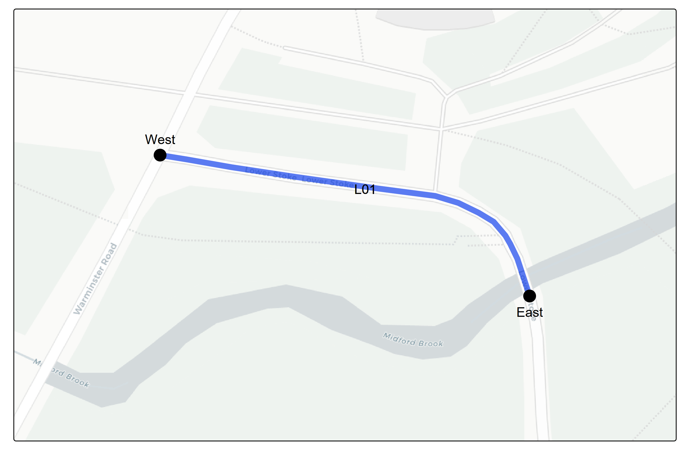 
L02 is the section from Midford Brook bridge to the base of Winsley Hill.  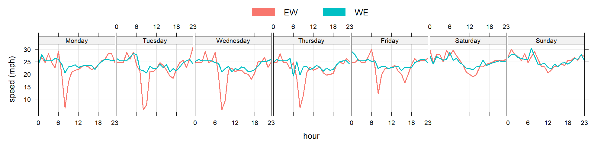
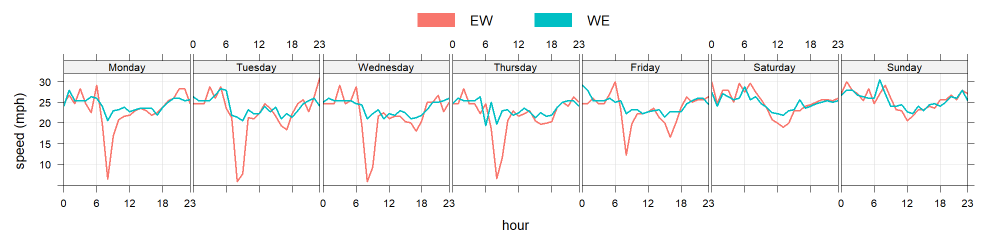
L03 is Winsley Hill up to where the speed limit currently changes to 50 mph, at the junction with Woodlands Drive.  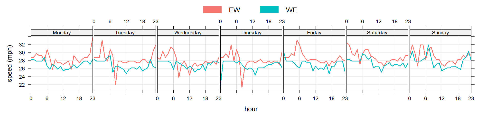
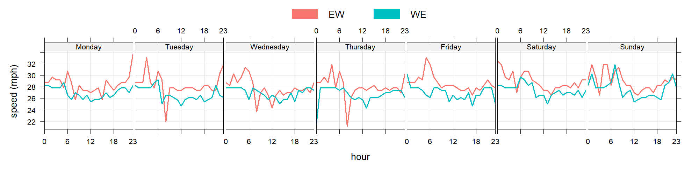
L04 is the 50mph section of the bypass, stretching all the way to the roundabout with Winsley and Bradford Roads. 
 L05 is the 40 mph section of Winsley Road
L05 is the 40 mph section of Winsley Road 

L06 the 30mph section of Winsley Road.  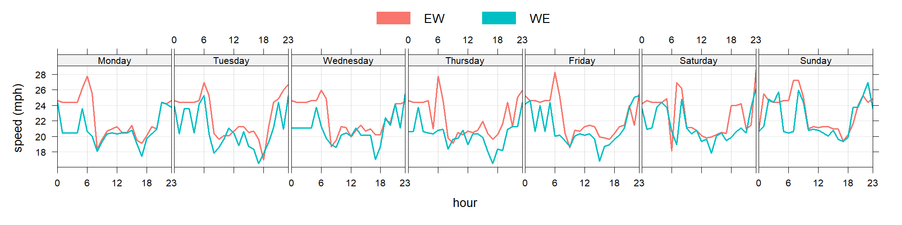
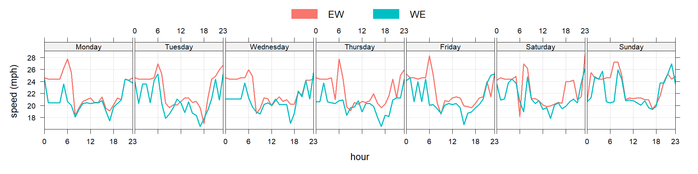
Each segment was queried for each hour of a future week, which was the week beginning 5th January 2026, in both directions for each of the 6 segments. This was 168 x 2 x 6 = 2,016 calls in total. Google provides 5,000 free calls per month, with further calls charged at 0.5 pence per call.
Scenarios
The current speed limits along the road are shown in the figure below. 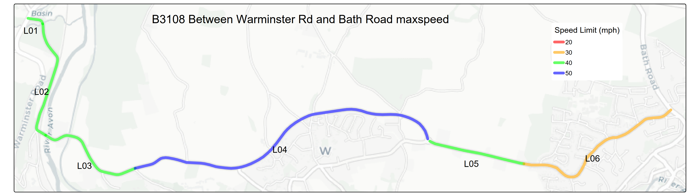
Given the complex nature of the road, with steep gradients, narrow, winding sections and proximity to residential areas there are numerous proposals. These have been broken down into scenarios
Scenario A
Reducing the 50mph section to 40mph bringing it into line with adjoining roads

Scenario B
Reducing the speed limit along the entire stretch of road to 30mph, bringing it into line with the Eastern most segment running through Bradford on Avon.

Scenario C
30mph along the full stretch but 20mph in the most built up section through Bradford on Avon, bringing it into line with other urban areas in Wiltshire. 
Scenario D
20 mph along the full stretch, the most effective at reducing noise and collision risk. 
Vision Zero
A 20 mph limit may appear extreme at first glance; however, Wiltshire Council has formally committed to the principles of Vision Zero, which aims to eliminate all deaths and serious injuries on the road network. At present, the county remains a considerable distance from this ambition, with 189 people Killed or Seriously injured on the regions roads in 2024. This suggests that more decisive and ambitious measures may be required.
Vision Zero is founded on the principle that if road users comply with the rules, the transport system should be designed so that fatal outcomes are not possible. Current vehicle safety standards (Euro NCAP crash tests) require vehicles to withstand a 64 kph (40 mph) impact with a rigid barrier. Any collision occurring at higher speeds exceeds this tested safety threshold.
On rural roads, head-on collisions are a common and particularly severe crash type (as evidenced in STATS19 data). In such cases, the equivalent impact speed is the combined speed of both vehicles. Two vehicles colliding head-on at 20 mph each produces an impact broadly equivalent to a single vehicle striking a solid object at 40 mph. Speeds above this therefore significantly increase the likelihood of fatal injury, even in modern vehicles.
Impact on journey time
Using the data from the Google API the impact on journey time along the stretch of road was assessed. This was done by taking the average speed for each hour, the length of each stretch of road and swapping the average speed for the revised speed limit. If the speed limit was lower than the average speed the journey time was recalculated with the speed limit assumed to be the speed.
The results of this for each scenario are shown in the table below for each direction 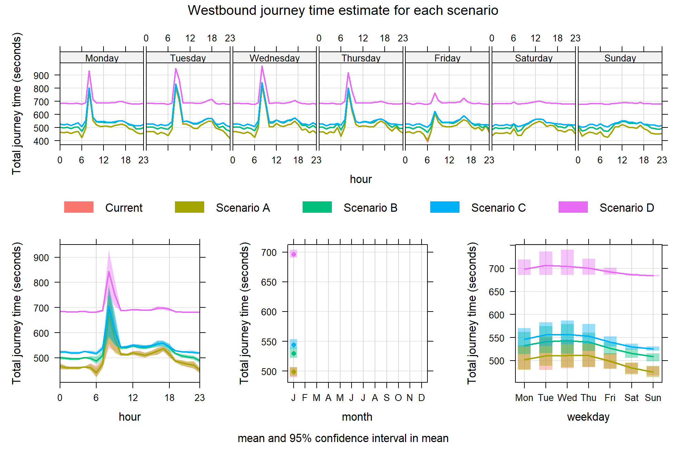 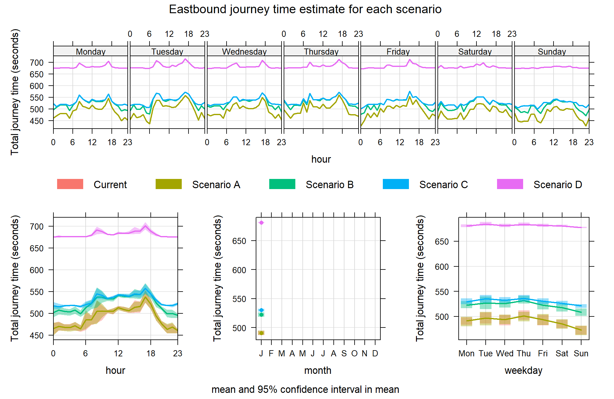
The current situation is not visible on the plot, because it is behind Scenario As line as it is identical (499 seconds Westbound and 490 Eastbound). Scenario B is estimated to have a 30 second increase in both directions, C 45 second increase Westbound and 40 seconds Eastbound and D 197 seconds increase Westbound and 191 Eastbound.
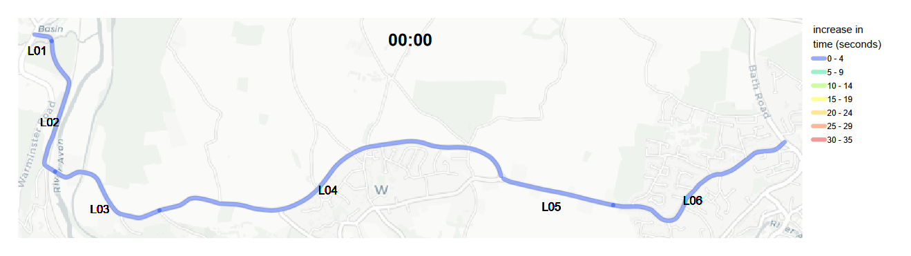 
 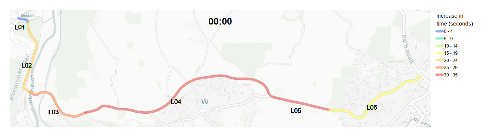
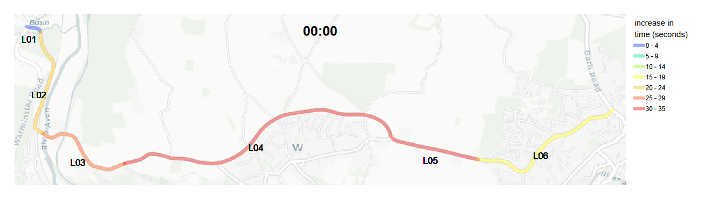
Economic impact
The DfT uses TAG data to attribute value to decisions such as speed limit changes.
Values of time
Tables xxx from TAG have been matched to trip data for the road, disaggregating each trip by estimated economic activity. This has been combined with the journey time estimates to provide a figure for the perceived loss to the economy
Calculating this for each scenario by direction gives: 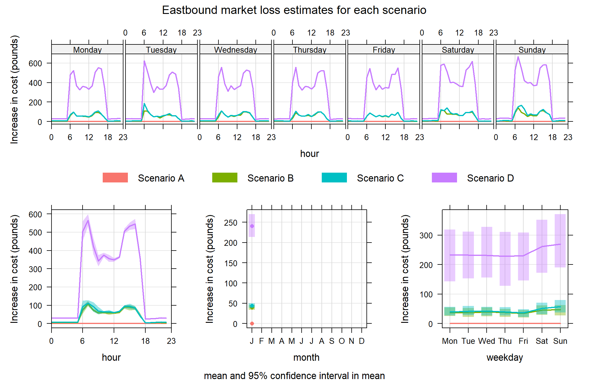 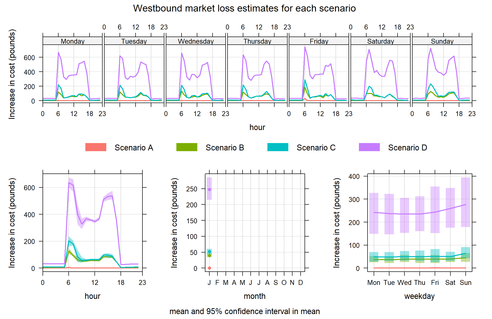
The TAG perceived loss to the market for each Scenario over the course of a year is:
- A: £1,644
- B: £661,576
- C: £801,843
- D: £4,087,308


There is no reason why the perceived loss to the economy of a driver taking a few seconds longer, should outweigh noise, air pollution or collision costs. People neighbouring the road have to put up with incessant noise.
Evidence that uniform speed limits are less cognitively challenging
20mph is most efficient speed for electric vehicles, saving drivers money.
population
It is estimated over 1400 people live within 100 metres of the B3108. 225 of these live within 100 metres of the 50mph section. 
Further details on how this was estimated is given in the appendix.
Collision costs
It is estimated that road traffic collisions cost the UK economy £55 billion in 2024. Of this £14 billion are injury costs.
Between 2010 and 2024 there were 57 collisions resulting in 74 casualties, reported to the Police.
Applying the methodology from TAG to the collisions along B3108
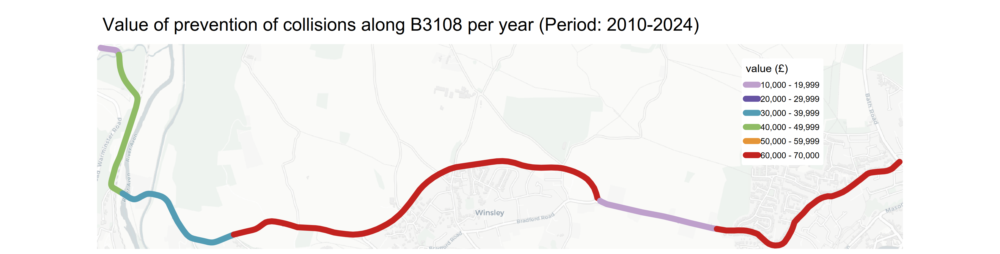
Trip data
The DfT last estimated the trips along the B3108 at Winsley Hill in 2019 (https://roadtraffic.dft.gov.uk/count-points/947637). Prior to this a manual count was undertaken each year for the last 10 years. The manual count data in 2018 provides a diurnal profile for each vehicle and direction. The directional data estimated in 2019 has been combined with the diurnal profile.
In 2024 it was estimated that Annual Average Daily Trips (AADT) [were similar to 2019] (https://www.gov.uk/government/statistics/provisional-road-traffic-estimates-great-britain-october-2023-to-september-2024/provisional-road-traffic-estimates-great-britain-october-2023-to-september-2024). Therefore, 2019 traffic data has been used for this analysis.
On average 52% of vehicle traffic travels Eastbound. This reaches its peak at 6am when 74% of vehicles are travelling in this direction. At 5pm the majority (63%) of traffic flows in the Westbound direction.
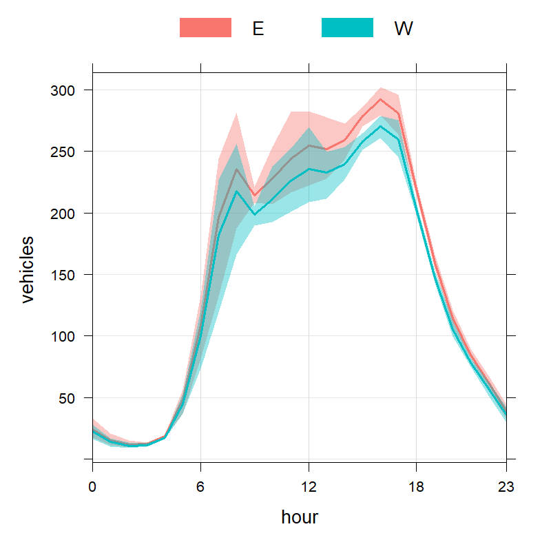
Average speeds
Cycle infrastructure benefits
Narrowing the road could be achieved by adding high quality cycle and walking infrastructure to the road.
Infrastructure that meets guidelines, i.e. not a shared footpath/cycle path that is a hotbed for
TAG table 4.1.6 provides a cost benefit for cycle infrastructure to the cyclist based on the time spent cycling the infrastructure.
Using the DfT estimate for cyclists using the road each day, it is estimated that the benefit for adding a segregated cycle path along the full length of the B3108, assuming a cyclist travels at 5 metres per second, would be nearly £60,000 per week or £3 million per year. Adding this, along with a high quality footpath, could reduce the road width, also reducing the speed of vehicles down the road.
One of the takeaways from the analysis of STATS19 data on drivers involved in collisions on the road is that they generally live locally. Enabling people to undertake local journeys on foot or by bicycle will reduce the number of motor vehicles on the road.
(map of LSOA of drivers)
Air pollution
The image below shows an example of NO[[2]] dropoff calculated with the Defra NO2 drop off tool. NO2 reacts with the atmosphere and drops off relatively quickly from the roadside. It is estimated that increasing the source (vehicles) and receptor (buildings) distance by 2m NO2 would be 14% lower at the receptors (https://www.cibse.org/media/tw0bfknn/ukueq-white-paper-the-urban-emergency-main-page-v01.pdf) 
Summary
Adding cycle path Reducing speed limit Noise reduction collisions avoidance
Appendix
Journey time
Local population calculation
The Office for National Statistics (ONS) compiles regularly updated population data for the ‘Local Super Output Areas’ (LSOA). The plot below shows the total population for LSOA areas that intersect the B3108.  In order to estimate the population close to the road the population was distributed over the OSM buildings shapes based on the area of the buildings. The population of each building that falls within a 100m buffer of either side of the road was summed. It is estimated that just over 1400 people live within 100 metres of the B3108, the majority along Winsley Road in Bradford on Avon.
In order to estimate the population close to the road the population was distributed over the OSM buildings shapes based on the area of the buildings. The population of each building that falls within a 100m buffer of either side of the road was summed. It is estimated that just over 1400 people live within 100 metres of the B3108, the majority along Winsley Road in Bradford on Avon.